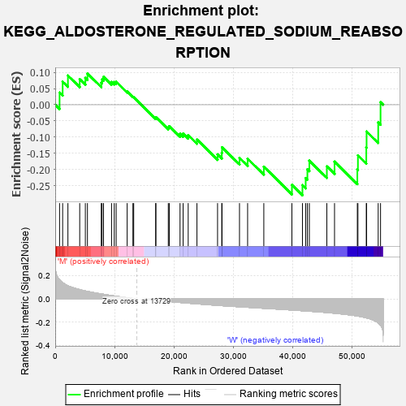
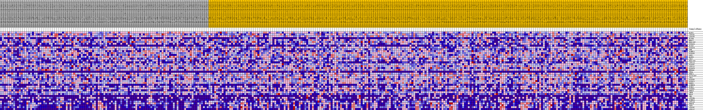
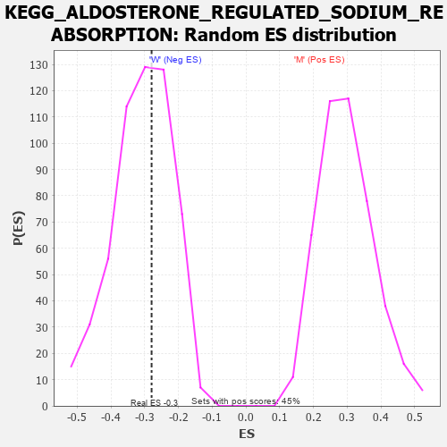

| Dataset | MUC16.MUC16.cls#M_versus_W.MUC16.cls#M_versus_W_repos |
| Phenotype | MUC16.cls#M_versus_W_repos |
| Upregulated in class | W |
| GeneSet | KEGG_ALDOSTERONE_REGULATED_SODIUM_REABSORPTION |
| Enrichment Score (ES) | -0.279718 |
| Normalized Enrichment Score (NES) | -0.9083945 |
| Nominal p-value | 0.58951175 |
| FDR q-value | 1.0 |
| FWER p-Value | 0.999 |

| PROBE | DESCRIPTION (from dataset) | GENE SYMBOL | GENE_TITLE | RANK IN GENE LIST | RANK METRIC SCORE | RUNNING ES | CORE ENRICHMENT | |
|---|---|---|---|---|---|---|---|---|
| 1 | MAPK1 | na | 734 | 0.165 | 0.0376 | No | ||
| 2 | ATP1B1 | na | 1253 | 0.140 | 0.0715 | No | ||
| 3 | ATP1B3 | na | 2142 | 0.113 | 0.0902 | No | ||
| 4 | FXYD4 | na | 4130 | 0.080 | 0.0790 | No | ||
| 5 | NR3C2 | na | 5078 | 0.068 | 0.0830 | No | ||
| 6 | HSD11B2 | na | 5432 | 0.065 | 0.0965 | No | ||
| 7 | PIK3CG | na | 7764 | 0.043 | 0.0676 | No | ||
| 8 | FXYD2 | na | 7892 | 0.042 | 0.0783 | No | ||
| 9 | PIK3CB | na | 8139 | 0.040 | 0.0862 | No | ||
| 10 | SFN | na | 9498 | 0.029 | 0.0705 | No | ||
| 11 | SCNN1A | na | 9949 | 0.025 | 0.0701 | No | ||
| 12 | PIK3R3 | na | 10272 | 0.023 | 0.0713 | No | ||
| 13 | SGK1 | na | 12126 | 0.010 | 0.0409 | No | ||
| 14 | MAPK3 | na | 13096 | 0.004 | 0.0245 | No | ||
| 15 | IRS2 | na | 13233 | 0.003 | 0.0229 | No | ||
| 16 | HSD11B1 | na | 16934 | -0.010 | -0.0409 | No | ||
| 17 | ATP1A3 | na | 16970 | -0.010 | -0.0384 | No | ||
| 18 | PIK3R2 | na | 19058 | -0.021 | -0.0697 | No | ||
| 19 | ATP1A1 | na | 19222 | -0.022 | -0.0661 | No | ||
| 20 | PIK3CD | na | 21039 | -0.030 | -0.0897 | No | ||
| 21 | NEDD4L | na | 21555 | -0.032 | -0.0891 | No | ||
| 22 | IRS4 | na | 22415 | -0.036 | -0.0936 | No | ||
| 23 | PRKCA | na | 23890 | -0.042 | -0.1074 | No | ||
| 24 | SLC9A3R2 | na | 27363 | -0.055 | -0.1533 | No | ||
| 25 | IRS1 | na | 28074 | -0.058 | -0.1484 | No | ||
| 26 | PIK3R5 | na | 28119 | -0.058 | -0.1314 | No | ||
| 27 | PIK3CA | na | 31062 | -0.067 | -0.1639 | No | ||
| 28 | PDPK1 | na | 32429 | -0.072 | -0.1665 | No | ||
| 29 | SCNN1B | na | 35160 | -0.080 | -0.1912 | No | ||
| 30 | KCNJ1 | na | 39894 | -0.095 | -0.2476 | No | ||
| 31 | PIK3R1 | na | 41671 | -0.101 | -0.2484 | Yes | ||
| 32 | PRKCG | na | 42215 | -0.103 | -0.2264 | Yes | ||
| 33 | INSR | na | 42506 | -0.104 | -0.1995 | Yes | ||
| 34 | KRAS | na | 42835 | -0.105 | -0.1728 | Yes | ||
| 35 | INS | na | 45785 | -0.117 | -0.1902 | Yes | ||
| 36 | ATP1B4 | na | 47079 | -0.123 | -0.1757 | Yes | ||
| 37 | SCNN1G | na | 50924 | -0.147 | -0.2001 | Yes | ||
| 38 | ATP1A4 | na | 51021 | -0.147 | -0.1563 | Yes | ||
| 39 | PRKCB | na | 52433 | -0.162 | -0.1319 | Yes | ||
| 40 | IGF1 | na | 52481 | -0.163 | -0.0825 | Yes | ||
| 41 | ATP1B2 | na | 54440 | -0.205 | -0.0546 | Yes | ||
| 42 | ATP1A2 | na | 54834 | -0.225 | 0.0078 | Yes |

